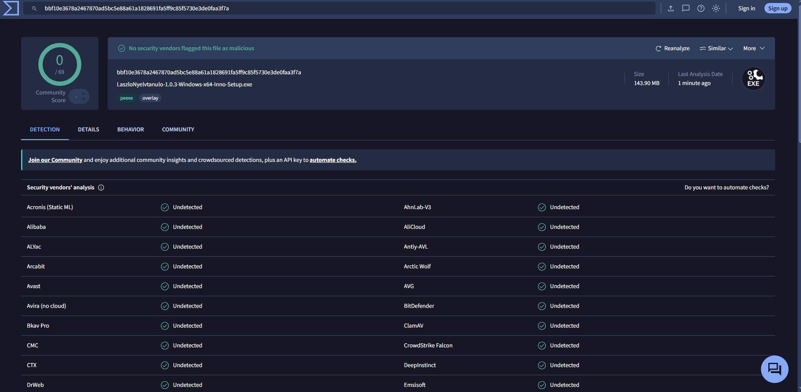
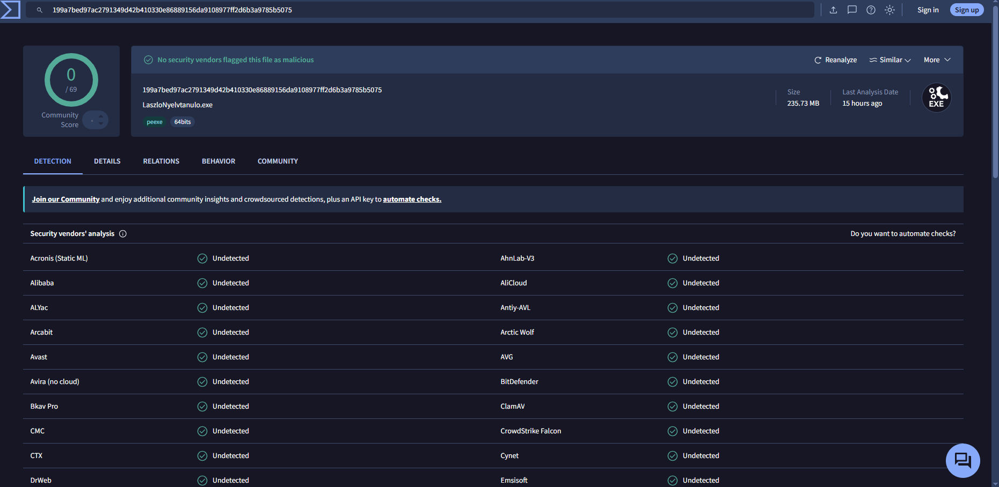
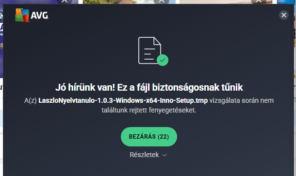

Válassz egy kis témakört.
Köszönések, otthon, utazás vagy nyelvtani kifejezések: szűkíts arra, amire most szükséged van.
EGY KIS SPANYOL. MINDEN NAP.
Ismerd meg a szópárokat, hallgasd meg a kiejtést, majd próbáld ki, mennyi maradt meg. Egy önálló Windows-program a saját tempódhoz.
Ez a bemutatóoldal három nyelven olvasható. Maga a program és a PDF-útmutató magyar nyelvű; a tananyag spanyol–magyar. Angol vagy spanyol kezelőfelület jelenleg nincs.
Utána 19 € + áfa · egy gépre · egyszeri vásárlás
A program magyar nyelvű áttekintése. Kattints a nagyításhoz.
Nem kell minden szót ugyanúgy tanulnod. Válassz témakört, majd válts a kártyák, a hallás utáni feladatok és a játékok között.
Köszönések, otthon, utazás vagy nyelvtani kifejezések: szűkíts arra, amire most szükséged van.
Hallgasd meg a szavakat, adj hozzá saját példamondatokat, és társíts hozzájuk személyes képeket.
A hibák külön gyűjteménybe kerülnek, az ütemezett ismétlés pedig segít rendszeresen újra elővenni őket.
Spanyol és magyar egymás mellett, elrejthető fordítással. Feleletválasztás vagy beírás, mindkét irányban.
Hallgasd meg a spanyol kifejezést, válaszd ki a jelentését vagy írd le. Helyi Windows-beszédhanggal offline is működik.
Akasztófa, képes gyakorlás, fordítások és spanyol ellentétpárok összekapcsolása.
Új szavak, példamondatok, szerkeszthető bejegyzések és előnézettel ellenőrizhető Excel-/CSV-import.
Feltölthető, cserélhető képek automatikus kicsinyítéssel. 600 MB-os képtár, külön helyi tárolással.
Nehéz szavak gyűjteménye, ütemezett ismétlés, témakörönkénti haladás és a gyakorlókörök eredményei.
A bemutatáshoz néhány kép és beépített rajz szerepel a programban. A többihez te választhatod ki a neked legkedvesebb képet: Szótáram → Szerkesztés → Saját kép.
JPG, PNG vagy WebP, legfeljebb 4 MB. A program aránytartással maximum 512 × 512 képpontra és 64 KB-ra alakítja. A 600 MB-os keret körülbelül 9600 maximális méretű képnek elegendő.
Az eredeti képfájlt később áthelyezheted: a program saját másolatot őriz. A teljes ZIP-mentés a saját képeket és a tanulási adatokat együtt tartalmazza. A régi JSON-mentések is visszaállíthatók.
Valódi képernyőképek a magyar kezelőfelületről. A galéria nem egy lefordított programot mutat; a képek minden oldallang mellett magyarul maradnak.
A próba az első indításkor indul, és minden tanulási funkciót tartalmaz. Az egyszerű újratelepítés nem indítja újra a próbaidőt.
Töltsd le a telepítőt, futtasd, majd indítsd a programot az asztali vagy Start menüs parancsikonnal. Külön Excel vagy böngésző nem szükséges.
1.0.3 · 143,90 MB · x6422 oldalas PDF képernyőképekkel: gyakorlási módok, saját képfeltöltés, ZIP-mentés, próbaidő és aktiválás.
PDF · HU · 22A kiejtéshez helyi spanyol Windows-beszédhang szükséges. Ennek első letöltéséhez internet kellhet; utána a tanulás internet nélkül használható.
19 € + áfa
Egyszeri vásárlás · egy Windows-gépre · a megvásárolt verzió időkorlát nélküli használata
Lejáró próba után a tanulási adataid megmaradnak, és a mentés is elérhető. A licenc géphez kötött; másik géphez vagy Windows-újratelepítés után kérj segítséget.
mesterweb@lnkr.esA mellékelt VirusTotal-képeken az 1.0.3-as telepítő és a programindító EXE eredménye is 0/69 jelzés. A teljes jelentések az alábbi linkeken nyithatók meg.



A képen látható, telepítéskor ellenőrzött ideiglenes fájlnál az AVG nem talált rejtett fenyegetést.
A képek a megnevezett fájlok vizsgálatkori eredményét mutatják. Az aktuális jelentés a VirusTotal-linken ellenőrizhető.
A program jelenleg kizárólag magyar kezelőfelülettel működik, spanyol–magyar tananyaggal. Az oldal spanyol és angol fordítása a bemutatást segíti; nem kapcsol be más nyelvet a programban.
A tanulás, a saját képek kezelése és a licenc ellenőrzése offline működik. A letöltéshez, a licencigénylő elküldéséhez és az első Windows-beszédhang telepítéséhez internet szükséges lehet. Google-fiók nem kell.
Nem törlődnek. A lejárt próba után licencfájllal folytathatod a tanulást, és a mentés az aktiválási oldalon is elérhető. A teljes ZIP-mentést rendszeresen érdemes külön helyen megőrizni.
A telepítő jelenleg nem rendelkezik Windows-kódaláírással. Emiatt megjelenhet ismeretlen kiadóra vagy ritka letöltésre utaló figyelmeztetés. Ellenőrizd a letöltési forrást és a megnevezett fájl vizsgálati jelentését; a Windows-védelmet tartsd bekapcsolva.